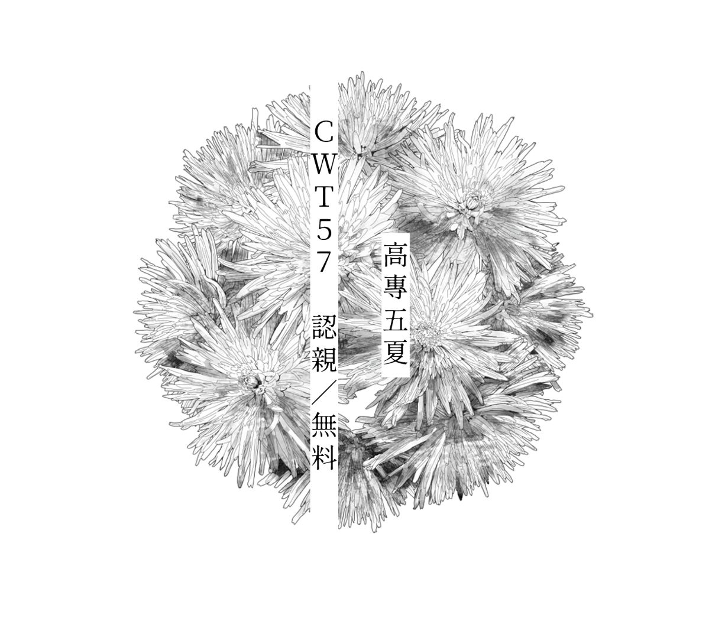

五夏短篇（五條悟 x 夏油傑）
此篇為CWT57發送的交換/認親文。
五條和夏油同居（在夏油的宿舍房間）為前提。
原因大概是某人隨便找了毫無邏輯可言的理由擠了進去。
和上一篇的時間線相同。
同居二十題題目來源：nijipu510.weebly.com
校稿感謝 – 柳松菇
表紙素材 – kayu*

/
嫌亮叫對方關燈
出遠門的任務前夜，夏油坐在書桌前翻著為數不多的當地考察文獻，謠傳般的迷幻風俗讓他頻頻皺眉。而他預定的隨行搭檔不僅早早就爬上床，還不斷叨擾他。
「傑──快點來睡覺──」
「等下就去了，你先別吵我。」夏油連頭都沒抬。
「可是你開著燈好亮啊，我睡不著。」
「你別朝著這邊看啊。」夏油早就體貼地關上房間大燈，只留下一盞小小的檯燈，勉強供自己閱讀。
「嗯⋯⋯」五條伸直一隻手，攤平手掌擋在自己的臉與發光的燈泡中間，停頓了幾秒後，整條手臂又像洩壓的氣閥一樣跌回床鋪，「不行，還是好亮。」
夏油沒有理會。五條向來對這些繁瑣枯燥的東西不上心，坐在課桌椅前聽講的學科老是心不在焉，任務的紙本資料從未翻看，書架上那排屬於夏油的書籍他更是不曾碰過。夏油曾經試圖解釋那些看似古板實則深有意義的文字其實對五條來說也有點用處，可五條哪裡會聽他的。好的時候，五條會黏上來把話題打發掉，鬧得厲害的時候，可能還會滾到操場上扭打個夠。
「你早點睡嘛，快關燈別再看了。不就是鄉下地方的咒靈嗎？祓除掉就好了啊，早點睡才比較有精神吧！」
夏油轉頭，看見五條側躺在床上，夏季薄涼被蓋到腹部，蓄著強大能量與無限成長可能的修長身軀藏在底下，在昏暗的光線下呈現一個極度慵懶且招人放鬆的弧度。他本想說什麼，可那雙藍眼睛盯著他，亮亮的，夏油有那麼一瞬間錯以為那兩顆藍寶石竟比那頭白髮還要亮。夏油有時候覺得，五條向他討什麼的時候，心理上善用他的寵溺佔七分，花言巧語佔一分，剩下的兩分則是用眼睛在討。
「⋯⋯你的墨鏡呢？」
「蛤？哪有人戴墨鏡睡覺的？」
倒也不是那個意思。夏油手邊抄起一件被亂扔的背心，直往五條臉上砸。「那這個。」
「幹嘛給我這個，難不成你要我用這個遮光？」他看著五條把薄薄的黑色布料捲成長條，再纏上自己的臉，像是戴著吸汗運動髮帶卻被死黨惡搞往下扯的路邊屁孩，「蠢死了。」
「我倒覺得挺適合你的。」夏油突然覺得有些愉悅，那好笑的模樣確實地逗到了他。
「啊？」
「睡了，」他關掉檯燈，三兩步便鑽上床，兩個發育中的大男孩在狹窄的單人床上蹭在一起，「不會亮了吧？」
「耶！傑果然最好了！」五條在一片令人安心又舒服的黑暗中抱緊夏油，把自己的臉埋進另一頭安心又舒服的黑色長髮間。
重新裝潢
「哇嗚──地震欸！」餐桌上的陶瓷茶杯格格地嗑著，五條一把扶住它。
「嗯，是地震。」夏油放下碗筷，瞥了一眼餐館角落電視機上的警報字幕，確定不是附近的什麼大型咒靈在作祟，「只是，我們還是躲一下吧。」
震動持續著，用餐的食客早就躲進桌子底下，餐盤碗筷落在地上打轉。
「又沒關係，等下就停了吧。」就算天花板砸下來也傷不了的五條不滿地噘嘴，趁著被夏油拖下餐桌前再塞一口涼烏龍。
「別做醒目的事，悟，夜蛾老師明明說過很多次了。」夏油嘆口氣，靜靜祈禱震災不要太過嚴重。
回到高專，校舍並沒有什麼損害，古老建築工法早已經歷過更大地震的洗鍊。所以當五條與夏油打開宿舍房門看見狼藉的模樣時，才真正有地震的實感。
「我都要懷疑硝子趁亂進來搗蛋了。」五條把散在地上的書撈起來，歪歪斜斜地疊回桌上。
「硝子才沒有你那麼無聊。」
夏油忙著把零零落落的東西歸位，五條則趴在床上，兩條長胳膊掛在外頭，懶洋洋地把滾到床底下的雜物用手掃出來。
夏油在書桌邊撿起摔在地上的相框。相片是高專入學前與父母親在家門口前的合影，也是他帶來高專宿舍唯一的一張照片。夏油索性把照片抽出來，然後把壞了的框扔進垃圾桶。
「啊，居然碎掉了！」五條探頭過來，「下次要買壓克力的啦！玻璃又重又危險。」
夏油本想拿膠把照片貼在牆上就好，可看著躺回床上舉高雙手對空比劃著各種款式的新相框的五條，決定把這東西加入代購清單中。
不只這張相片，進了高專後認識了好多人，有了好多新的回憶。他可以多買幾個，反正還有點空間，放上穿高專制服的入校合影，放和五條、家入、夜蛾老師的合照，放完成任務後一起去甜點鋪的照片，放五條蠢斃了的睡顏。
「嗯哼，那就麻煩五條少爺幫忙買單了！」
夏油話音才剛落，地面又開始搖晃。「餘震？」
「地震啦！」五條大叫一聲，身子向前一躍，靈活地抓住夏油，一把把人往後扯，雙雙跌上床鋪，「我好怕啊傑！快過來避震！」
「你幹嘛啊！」夏油被這一震一摔弄得有點暈，數小時前還在晃動的餐館桌子下一邊划手機一邊抱怨什麼時候能出去的男高中生則像條蟒蛇一樣，用四肢纏住他的身體。
「要躲也是躲床下啊。」
「咦，是嗎？」
五條身手矯健地翻身下床，理所當然地把夏油也拖了下來，兩人跌到硬木板地上，卻始終沒有分開。
夏油仰躺著，而五條伏在他身上，摘掉墨鏡後那雙又大又亮的天藍色眼珠子就在咫尺之內。
這畫面真該拍下來洗成相片放在桌上。
地板還在震，小小地、微微地。五條的臉貼了上來，夏油故意說天花板上的燈泡要砸下來了，五條卻說，看是我先吻到你，還是燈泡先砸到他的後腦勺。
他們一遍又一遍地親著、吻著，五條拆開夏油的髮圈，夏油扯亂五條的頭髮。於是除了五條眼裡那片藍天外，再也沒有任何東西砸下來。
Fin.
2021.3.27. 墨兒∞
－
Last edit 2022/9/3 | Built by 墨兒
Copyright © 2018 Your Company Name | Designed by Template Mo